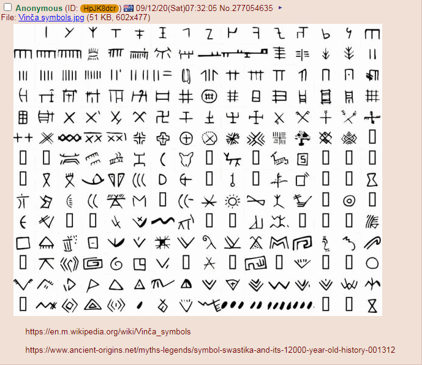
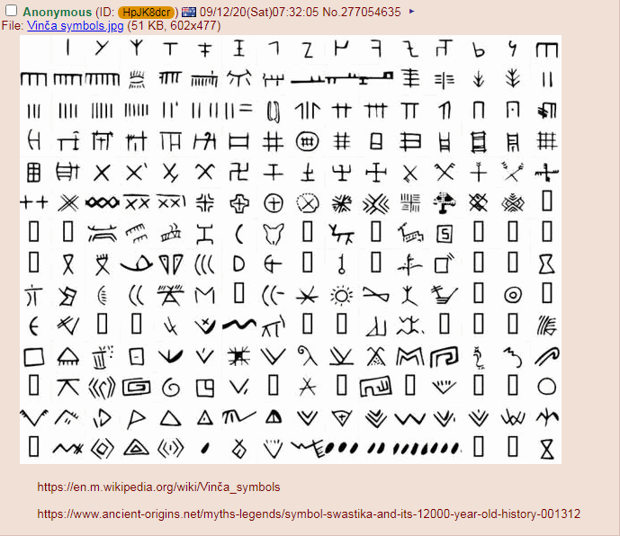

2020-09-12 09:00
匿名索虏外野政治正确情报：


2020-09-12 10:00
匿名索虏内野政治不正确情报：

 



2020-09-12 12:00
匿名岛夷色目含量甚高的时事新闻：
2020-09-12 13:45
洗完澡了精神抖擞容光焕发，解释一下刚爬起来酒劲还在头昏脑胀的时候搜集的情报，上面光备份素材了。
简单说，匿名索虏冷色调背景的外野之「政治正确」的情报从意识形态斗争出发，通过平面几何联想到政治斗争，再转进到神话传说，最后娱乐至死の色目逗哔把话题导向肥皂剧泡面番……大事化小小事化了，经典公关案例。
其中有很多大段文字的严肃神学观点讨论，都是根据读者嗜好不同而两极分化严重的，比如内行耳熟能详于是略过而外行根本不感兴趣于是略过的，所以这里没有备份。在其它码字当中也提到了，包括但不限于《知乎问答№009》所备份的在之江临安「原创文学论坛」与当时疑似漠北大手情报机构负责推销东正教的员工之谈笑风生。化用到文艺作品当中也有，比如「和子句」公案，已经在第三篇设定当中出现过了，在注释当中也解释过了。
还有大批色目逗哔插科打诨嬉皮笑脸哗哗贴无聊图的回复，统一略过。从版面也能看出来，严肃讨论的是一拨人，到处碰瓷放风带节奏的间谍特务卧底是另外一拨人，互相没有交集，偶尔有后者主动跨界挑衅或者睁大眼睛额头亮晶晶的装蒜兼贵人多忘事纠缠，也很少有前者搭理。
看到有些故意捣乱的回复已经被删除了，风格类似砥砺奋进七八年来我在之江临安「原创文学论坛」之上的经历，以山东色目公务员为首的间谍特务卧底帐号通过无意义的灌水稀释版面，顺便兵分两路追着谁喷「布尔什维克犹太猪」或「傻哔绿人」煽风点火挑拨离间，闹起来就撤退回总部授勋顺便升官发财死老婆。正如《异闻录》正文里面提到的那样，用临夏色目人与甘南吐蕃人影射亚美尼亚与阿塞拜疆的战争，矛头直指幕后黑手。
而匿名索虏暖色调背景的内野之「政治不正确」的情报就有大批学术内容了，娱乐至死の色目逗哔虽然也在其中插科打诨嬉皮笑脸企图把风向带歪，但是没能得逞，应该是讨论所需知识结构及水平乃至素材储备对用户要求较高的缘故。这里同样只备份图文并茂型素材，大段文本和无关的娱乐至死内容则忽略。
过程先是从一种学术观点出发，说纳粹选作党徽的卐卍符号是斯拉夫象征，可以结合前面备份的斯拉夫部落分布以及扩张理解。然后有对立面观点提供同样充沛的证据，说这种符号在各种种族民族宗教文化语言背景的场合都出现过，不能绑定在具体种族和民族之上。
然后出现「黑太阳」标志，既是白皮种族主义象征也是黑鬼象征，颇有黑格尔吹捧本族语言时举例「扬弃」一词的傲慢：
黑格尔尝鄙薄吾国语文，以为不宜思辨；又自夸德语能冥契道妙，举“奥伏赫变”（Aufheben）为例，以相反两意融会于一字(ein und dasselbe Wort zwei entegengesetzte Bestimmungen),拉丁文中亦无意蕴深富尔许者。其不知汉语，不必责也；无知而掉以轻心，发为高论，又老师巨子之常态惯技，无足怪也；然而遂使东西海之名理同者如南北还之风马牛，则不得不为承学之士惜之。
—— 钱钟书《管锥编》
当年在之江临安「原创文学论坛」之上讨论过这个话题，主要是在与根红苗正忠君爱国的童年才俊一边吹捧革命导师熟读经史一边吹捧张铁生韩寒停课闹革命并宣称「中学政治课本治天下」的奇谈怪论当中提到的。当时其它帐号指出，革命导师圣卡尔对于远东的所有了解几乎都继承自黑格尔，就比方说「亚细亚生产方式」相关内容，这些观点不能用来指导东亚尤其是中国革命。
但是武德充沛的革命战士叫嚣人民民主专政铁拳一力降十会砸烂谁的狗头，于是其它帐号就换个方式，革命导师喷不得，黑格尔还喷不得？所以就出现了各种黑格尔对我中华兲朝上国一无所知还仅凭道听途说和种族歧视大放厥词，包括但不限于「中国没有哲学」「中国没有历史」之类观点。不再重复《知乎问答№017》当中已经写过的内容，兲朝数理化不咋地要承认，但是文史哲大拿如车载斗量不可胜数，各种做题家应有尽有已经内卷化两千多年了。注意「哲学」字眼的原文是「爱智慧」，所指和能指都是「西方哲学」，就是说从外人角度看来，黑格尔认为「西方以外没有西方哲学」，这是同义反复循环论证。而哲学相关内容，在设定集注释当中也略作展开，主要是围绕费希特观点为尚未出场的角色铺垫，这里不再重复。
具体来说，当时学贯中西的国学大师见到黑格尔高论，不约而同举了两个例子，汉语当中「易」这个字眼又有变化的意思，又有不变的意思，这是通用的例子，而在「予有乱臣十人」当中出现特例，其中「乱」是戡乱戒严的意思，不是造反有理的意思。
然后话题又展开到「血流漂杵」了，说孟老夫子认定「以至仁伐至不仁」断不会出现这种局面，只要高音喇叭循环播放伟大光荣正确的号召，人民群众就会自发的「倒戈」然后兵不血刃改朝换代，用龟头思考也知道其搞笑之处。只要从身边出发从小事出发，按照一切历史都是当代史的原则，不惮以最大的恶意揣测，关中「乱臣」还就是党国高音喇叭吹嘘砥砺奋进七八年来如何「破关夺隘攻城拔寨」时候的得力干将，至于是平叛剿匪「石头要过刀，茅草要过火，人要换种」还是闹革命打江山「三光政策」，党国高音喇叭对此只字不提。
扯远了，回到「黑太阳」标志，有人认为是是星系俯视图，是日耳曼式解读，来自古埃及死神与猎户座的典故，塔罗牌当中的「愚者」也就是传说当中的英雄，率领「雅利安人」南征北战。
再然后就有人认为「只不过是巧合而已」，因为这个图案简单规则，但凡能发挥些许想像力的脑壳都会自主创新出来，并提供了全球各地唯物主义证据分布图。其中有个看着扎眼的，偏偏是在外面裹了一层大卫之星，出现在阿富汗附近，被称为西藏特色。于是就与当年纳粹派人去西藏考古寻找雅利安文明遗址企图获得神秘力量的现实操作联系起来了。
最后出现了「幕后黑手」的爆料，早在1922年就有「温莎」阵营的冰球队选择了这个标志，于是为啥大盎帝国の爱德华八世会不爱江山爱美人，宁可退位也要迎娶美国寡妇，或曰中央情报局培训的燕子，就有了线索。联想到希特勒身边还有个情妇爱娃死到临头才结婚，对于幕后黑手指使「E
泥鸽太君」煽动土著掀起战争，并24×7全方位巡查监视无死角一切尽在掌握中，按照剧本先自称「优等民族」武德充沛屠杀老外，再按照剧本一败涂地费拉不堪自我屠杀从而为「真·优等民族」腾出生存空间，又有了新的解读。
结合个人经历就不难理解了，砥砺奋进七八年来，一方面多少情报掮客嘲笑谁「面对黑恶势力の“校园欺凌”不会不能不敢反抗」并以「林冲」举例放话说「缩卵怂货窝囊废再怎么委曲求全也会被逼上梁山/凉山/谅山」，另一方面家贼这一坨鲜卑老屎糊在我身上说什么也甩不掉还在年老力衰难以完成组织交代的骚扰任务的时候拼命推销「五十块钱包月的破鞋」企图承担「飞上枝头变凤凰の美国寡妇」之类身份。
我也在帐号尚未以「政治敏感」理由「亦当删去」的时候解释过，无论我去哪里都有家贼跟着，一方面能为歹徒跟我拼了至少是抱着脑袋往地下一蹲「你看咱家这情况吧」拉偏架替我认怂服软阻挠我反抗，另一方面就是撺掇我加入这个黑帮那个白帮这个赤眉那个绿林。我要是真的参加革命了，身边带个家贼同志们放心么？就算孤身上路，家贼还能时时刻刻打电话「想你了，啥时候回家看看」配合官府「诱捕」呢。说「忠孝不能两全」压根就不搭理吧，还有社会新闻「震惊重磅突发号外！失业老光棍儿子竟为了一点小事/一笔小钱/一双小鞋/一本小书……痛殴/捅死养了自己几十年的老父亲」并有「白眼狼养不熟」之类评论。
所以我才说，四十多年来迷宫地下城恶人谷的这些鲜卑丐帮毒贩，尤其是还与从足协主席到军委主席的高第良将家衙内勾肩搭背称兄道弟推杯换盏，就是二战前夕「温莎冰球队」的翻版。
作者最大剧本钦定的「希特勒v2.0」绝对不止我一个，导演叫人三更死谁敢留人到五更的「揉此万邦，闻于四国」先扬后抑前倨后恭剧情绝对不止一种套路，而最后的「大结局」当中腾笼换鸟的惨烈程度，远比三德子激烈得多。
毕竟日耳曼人也算白皮，还是盎格鲁撒克逊人的同胞呢，用不着杀光了直接配种即可。而我中华兲朝上国土著在幕后黑手看来不过是「黄皮猴子」而已，种族灭绝做得说不得，还是指使间谍特务卧底一路青云直上主席台率先掀起战争然后王师再「吊民伐罪」比较好，就算「血流漂杵」了，还能说成提前杜鹃下蛋塞野种的「自己人」幸免于难是「阵前倒戈」，孟老夫子还会撒谎不打草稿的否认「奥斯维辛宁古塔/乌里雅苏台集中营」「南京扬州/嘉定大屠杀」并拼命赞扬「纽伦堡武汉审判」呢。
2020-09-13 06:00
刚爬起来酒劲还在头昏脑胀，上网乱转发现匿名岛夷出现一条色目含量甚高的重要情报，已经补充在前面，与三洲通衢化干戈为玉帛动向并列。
简单说，之前就有娱乐至死の色目逗哔炒作美帝灯塔国出身的「黑寡妇」，公开资料显示为大手情报机构培训的燕子，接受过广泛的间谍训练，也是一名专家级的武术家（包括空手道、柔道、肯波流空手道、忍术、合气道、法国式拳击以及各种风格的功夫）、射手和武器专家。
据称第一代的原型就是1896年生于美国的温莎公爵夫人沃利斯·辛普森，为了贴身紧逼爱德华八世，不惜谋杀亲夫。第二代还没看见现实影射爆料，只看见设定表明是1928年生于察里津从小被克格勃培训的燕子，为了完成谋杀亲夫然后改嫁的革命任务，先运用人脉修改户部档案塞进谁家户口本了，目前还不知道。
设定说革命家风代代传，已经到第三代了，按照时间线计算延续至今肯定不止。前一阵「黑命贵」运动导致大手情报工学会社纷纷修改关键字（比如黑名单blacklist
改成blocklist
）的时候，就有业内笑话，说知名操作系统因为有个字母n
于是门店也被打砸抢抄抓了，广告上涂掉对应字母就变成“微软寡妇们”了也。
而在九省通衢の煎蛋等地《动物世界》素材当中，会有「饲养员」之类角色向人民群众科普，说「黑寡妇」学名间斑寇蛛，属球腹蛛科、寇蛛属。然后会有娱乐至死の色目逗哔补充说明《黑猫警长》已经向人民群众科普过了，说螳螂目下属一千五百多种昆虫都是「绿寡妇」，传统风俗习惯就是谋杀亲夫，哪怕没去民政部登记，开房约炮怀上龙种之后就会谋杀「男朋友」然后「母以子贵」篡党夺权。
为什么地点是大连，场所是海关，可以结合「盎格鲁太君赫德管理海关为大清续命」理解。还有个旁证，砥砺奋进七八年来，大连名流王思聪隔三岔五就在微博上嘲笑鲜卑名流薄瓜瓜，但是寻根溯源这二位少爷从小都在英国留学，看来属于什么「海外华人」组织的内讧。
以前在国际化大都市「华语第一精日论坛」之上与娱乐至死の色目逗哔扯淡的时候，引用蛭田达也名著《功夫旋风儿》当中的情节，说在美国大手情报机构对日本极右翼军国主义者的24×7全方位巡查监视无死角之下，惦记着早打大打打核战争正中下怀，这已经不是「假想敌国」而是「理想敌国」了，原画原话，有时间找到之后截图贴上来。
不惮以最大的恶意揣测，「温莎冰球队」就是二战始作俑者，希特勒对于「纳粹美学」的所有设计方案都来自白金汉宫，从头到尾都被遥控着假惺惺打一场「兵棋」游戏，必须在敦刻尔克把英军放跑，必须按照规定的时间窗口空袭指定地点，无论如何伦敦都有惊无险，龙裔贵种稳如泰山还能上街溜达「安定民心」呢。
举一反三触类旁通，这次全球剑拔弩张，从足协主席到军委主席的高第良将所属的与英国关系密切「学校」「球队」之类小团体，就是第三次世界大战的始作俑者。无论市面上出现什么缓则打着什么旗号，赤眉也好绿林也好，都是这帮稳坐国际一流和谐宜居之都吃香的喝辣的享受青春的幕后黑手所遥控的。所谓「反派」武德充沛还无恶不作也是剧本钦定的，「破关夺隘攻城拔寨」「打砸抢抄抓」「三光政策」「石头要过刀，茅草要过火，人要换种」，都必须在规定时间规定地点表演规定情节。
与此同时，国际一流和谐宜居之都「高学历精英社交圈」正在首页今日头条位置醒目应景推荐了一条河清海晏歌舞升平の盛世景象之下强调和谐社会不折腾的重要情报：
高全喜谈百年前清帝的“光荣逊位”_革命后面则是一条千古之谜：
这个问题还没有回答，哪怕是自诩「皇城根住大house骑大家闺秀」或「四九城住小mansion骑小家碧玉」的丹书铁卷与国同休的「旗人」也语焉不详，尤其是炫耀可以夜半开大奔随便出入「此景只应天上有」的紫禁城的后清亲王贝勒贝子们，不约而同对此保持沉默。
很奇怪是么？如果结合苏联解体相关情报，比如「东斯拉夫三国签署的《别洛韦日协议》原件失踪，《阿拉木图宣言》法理自动失效，苏联可能还存在」之类炒作，就可以看出辛亥年当时童年才俊溥仪身边的奴才们故意不用「国玺」的阴谋诡计了，扫帚星乌鸦嘴「西肃慎后清国太祖高皇帝」伤寒马力的出场，证明通古斯太君韬光养晦几十年终于攒够了武德准备再一次「入关」了。
但是这招有个副作用，改革春风吹满地四十多年来，多少通古斯太君高调宣称《清帝逊位诏书》授权组建政府才是本朝领土的法理基础，虽然萝莉控袁大头都不承认，都强调满清政权自动消灭，新时代政府的合法性来自人民代表推选。通古斯太君不打自招得意洋洋肆无忌惮的炫耀兵不厌诈，于是当初「要诏书，来人吖给他写一张」逗你玩，意味着后续「优待皇室」各种文件自动失效。
是，枪杆子里面出政权，打嘴炮没用。但是正如最近台湾清算刮民党党产那样，满清「王室财产」的保留以及后续经营所产生的所有收入之合法性，都来自各种有法可依有法必依执法必严违法必究。正如罗马法系统强调「ab initio
」那样，现在通古斯太君翻脸不认账了，那么开庭拉清单就要从一开始算起。
也就是说，市面上每年都有多少老外拿着当年老佛爷发行的大清国债证券向锤镰帮刮民党讨债，都没获得美国法院支持，因为建交谈判当中已经解决历史遗留问题了，旧账一笔勾销。而没有解决的历史遗留问题，也就是通古斯太君耍赖然后「凭本事骗来的钱，凭什么要还」还都在美国市面上兴风作浪，于是持大清国债证券者可以尝试「依法治国」没收这批「王室财产」嘛。